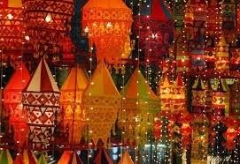
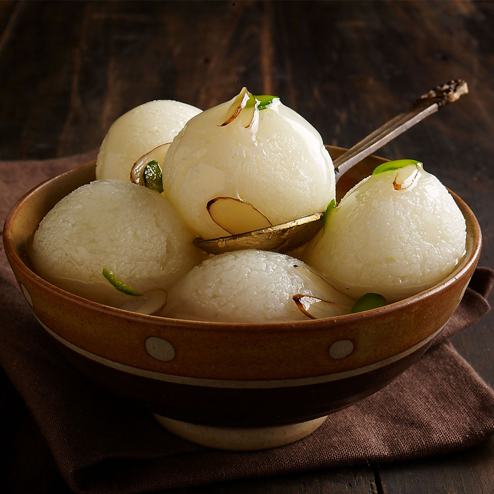

Heritage of Odisha
Click on the tiles below to explore Odisha's art, dance, and cuisine in detail.

Art & Handicrafts
 Dance Forms
Dance Forms

Cuisine
Click on the tiles below to explore Odisha's art, dance, and cuisine in detail.
Dance Forms